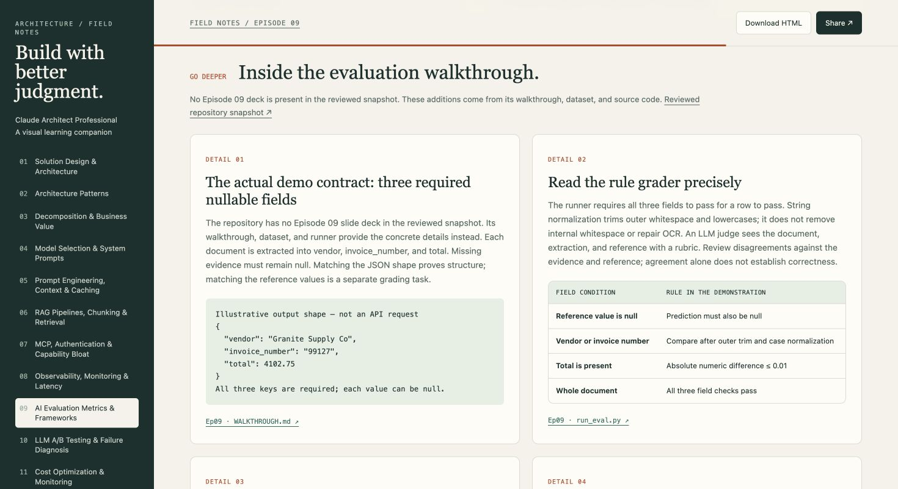
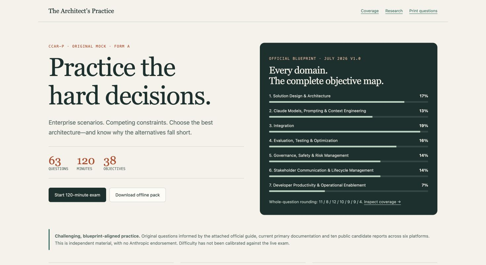
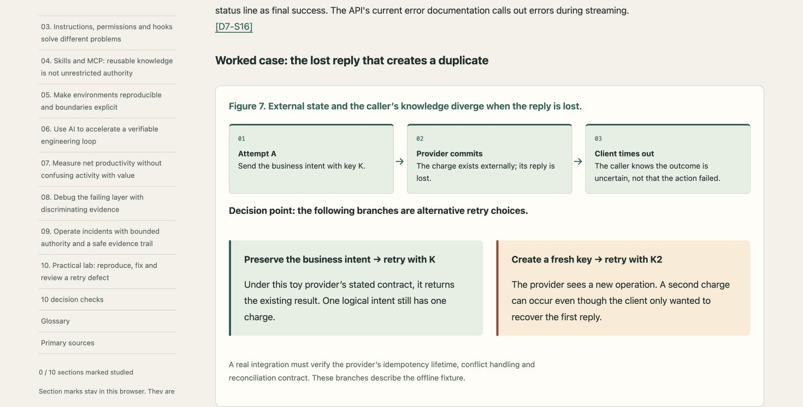

01 / Learn
Build the mental models.
Eleven episode pages with concept maps, process flows, decision tables and source-linked slide details.
11 episodes55 core takeaways39 detail cards

Claude Architect Professional · Independent study companion
Explore the course, build practical skills in governance and delivery, then test your judgment across the Professional exam blueprint.
01 / Learn
Eleven episode pages with concept maps, process flows, decision tables and source-linked slide details.

02 / Practice
Original scenarios with competing constraints, a continuous timer, review flags and explanations for every option.

03 / Apply
Governance, safety and risk; stakeholder communication and lifecycle; developer productivity and operations. Detailed explanations, project cases, diagrams, synthetic labs and reusable templates, researched against primary sources on 13 October 2026.

Each mock follows the supplied official CCAR-P guide v1.0, effective July 2026. Difficulty is deliberately demanding but uncalibrated against the live exam. Raw practice scores do not predict the official scaled result. Candidate-reported Yes/No and matching drills are supplemental and unscored.